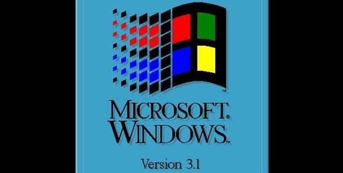
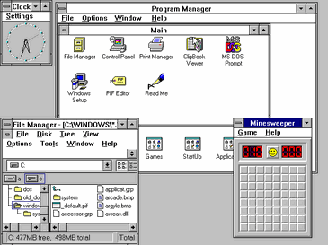
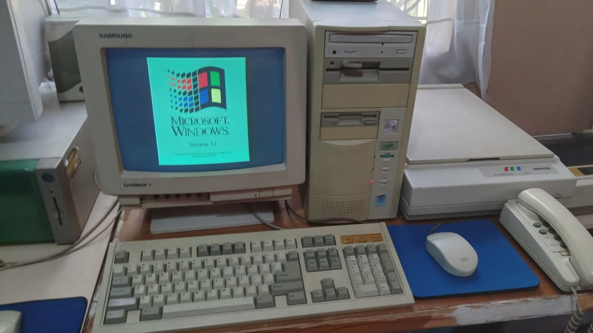

Стартовий екран Windows 3.х
1. ОСНОВНЕ
Windows 3.1, випущена в 1992 році, була важливим оновленням. Вона
внесла численні поліпшення у графічний інтерфейс, продуктивність та функціональність. Windows 3.1
представила такі нововведення, як TrueType шрифти, що покращили якість тексту та дозволили
використовувати ширший спектр типів шрифтів. Крім того, вперше було додано зручність "Drag and
Drop", що дозволяла користувачам перетягувати файли та піктограми між вікнами.
Windows 3.1 також вперше включала Меню Пуск, що замінило меню програм з попередніх версій і стало
центральним місцем доступу до програм та системних налаштувань. Це полегшило навігацію та роботу з
операційною системою для користувачів.
Windows 3.1 також встановила стандарт для подальших оновлень та розвитку Windows, відкривши шлях до
більш стабільних та функціональних версій(NT-Technology).
Windows 3.5 та 3.51 були більш малими оновленнями до Windows 3.1, випущеними в 1994 і 1995 роках
відповідно. Вони включали деякі додаткові покращення продуктивності та стабільності, але в цілому
залишалися схожими за функціональністю з попередніми версіями.
Ці версії Windows були популярними серед користувачів на початку 1990-х років, але в подальшому були
замінені більш революційними версіями, такими як Windows 95. Однак вони відіграли важливу роль у
розвитку операційних систем Windows та забезпечили базу для подальшого успіху компанії Microsoft.
2. ІНТЕРФЕЙС
Інтерфейси Windows 3.1, 3.5 і 3.51 мають багато спільних рис, оскільки всі вони базуються на
класичному графічному інтерфейсі, який став характерним для версій Windows 3.x. Однак кожна версія
внесла певні поліпшення та додатки до інтерфейсу.
У Windows 3.1, основні елементи інтерфейсу включають вікна, панелі завдань, ярлики (або іконки) на
робочому столі та великий обсяг використання миші для навігації. Меню Пуск ще не було впроваджено, і
доступ до програм та системних налаштувань зазвичай здійснювався через програми груп або файл меню.
Windows 3.5 та 3.51 зберігали базові елементи інтерфейсу Windows 3.1, але включали деякі покращення,
такі як більші можливості управління вікнами, покращені іконки та підтримка деяких нових технологій,
таких як TrueType шрифти. Вони також були більш стабільними та ефективними за рахунок вдосконаленої
оптимізації коду.
Загалом, інтерфейси Windows 3.x були відображенням свого часу, коли графічні користувацькі
інтерфейси тільки починали набирати популярність. Вони були прості та інтуїтивно зрозумілі, хоча у
порівнянні з сучасними інтерфейсами Windows, можуть виглядати дещо застарілими. Тим не менш, вони
відіграли важливу роль у впровадженні графічних інтерфейсів для користувачів персональних
комп'ютерів і стали попередниками більш сучасних інтерфейсів, які ми бачимо сьогодні.

Інтерфейс Windows 3.x

Компютор з Windows 3.x
3. Думка користувачів
Думки користувачів про версії Windows 3.1, 3.5 та 3.51 відрізнялися залежно від їхніх потреб,
очікувань та досвіду використання цих операційних систем.
Windows 3.1, як перша популярна версія серії Windows 3.x, отримала досить позитивний прийом. Для
багатьох користувачів вона стала відкриттям у зручності роботи з комп'ютером, завдяки своєму
графічному інтерфейсу та покращеній функціональності порівняно з попередніми версіями DOS.
Windows 3.5 і 3.51, як оновлення Windows 3.1, внесли певні покращення, особливо у плані стабільності
та продуктивності. Багато користувачів відчули позитивні зміни у роботі операційної системи, але
деякі можливо не помітили значних відмінностей від Windows 3.1.
Загалом, ці версії Windows відіграли важливу роль у впровадженні графічних користувацьких
інтерфейсів на ринку персональних комп'ютерів та у формуванні подальшого розвитку операційних
систем. Хоча сьогодні вони можуть здаватися застарілими, вони відіграли ключову роль у виробленні
фундаменту для подальшого успіху Windows..html